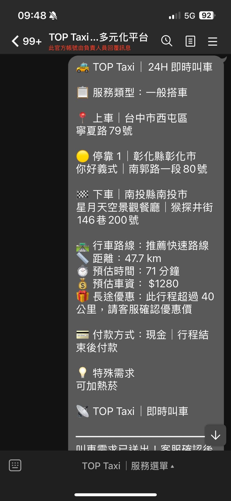

🚕 即時叫車｜正式實機
上車、停靠、下車、路線、距離、時間、車資與需求，一張單整理完成。
Demo Sandbox · 給車隊／平台看的實際流程
即時叫車、預約、代駕與跑腿，客人填一次，系統就把地址、時間、需求、路線與車資整理成客服可直接處理的訂單。
每張系統訂單都能有接收、派送、司機回報與乘客通知的明確狀態。
即時｜+T/上車住址+20
預約｜+T/12.00上車住址+20一般代買｜+T/跑腿代買/購買地點+20
附近代買｜+T/跑腿附近代買/送達地址+20即時｜+T/代駕/上車住址 百回+20
預約｜+T/13.00/代駕/上車住址 百回+20下方為 TOP Taxi 正式環境實際運作畫面。

上車、停靠、下車、路線、距離、時間、車資與需求，一張單整理完成。

日期、時間、停靠點、需求與付款方式，自動整理成預約派車資料。

任務類型、購買／送達方式、內容、費用與付款資訊，整理成標準服務單。
現在就能營運，後續持續把車隊人工流程系統化。
接單、派送、司機回報、車牌與乘客通知。
理解熟客簡稱、口語叫車與跑腿文字。
協助客服整理預約單、即時單與調度資訊。
GPS 跳錶、里程、時間、費率與司機工具。
把乘客、客服、調度與司機之間原本靠人工處理的流程，一步一步系統化。
現在就能營運，後續持續升級。